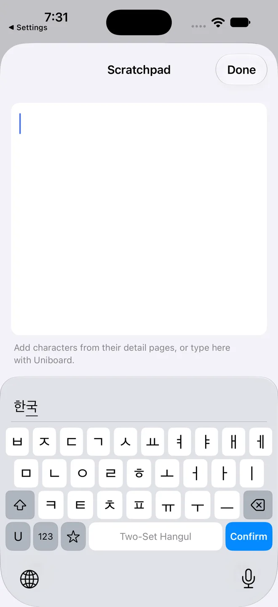
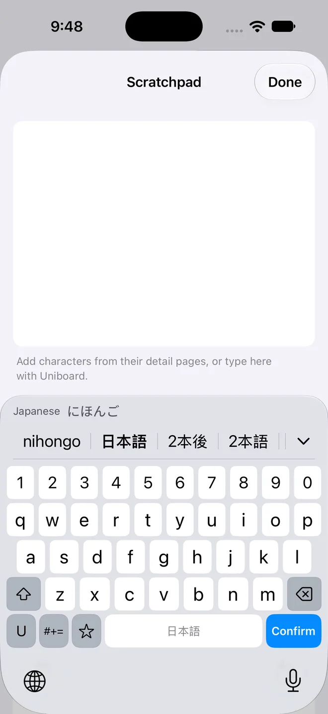
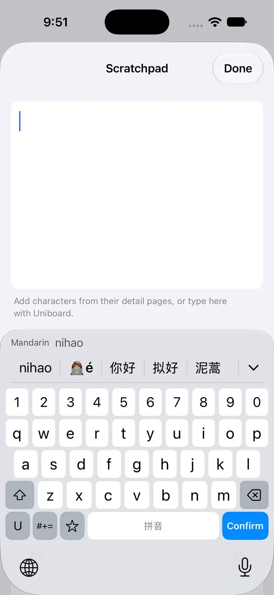
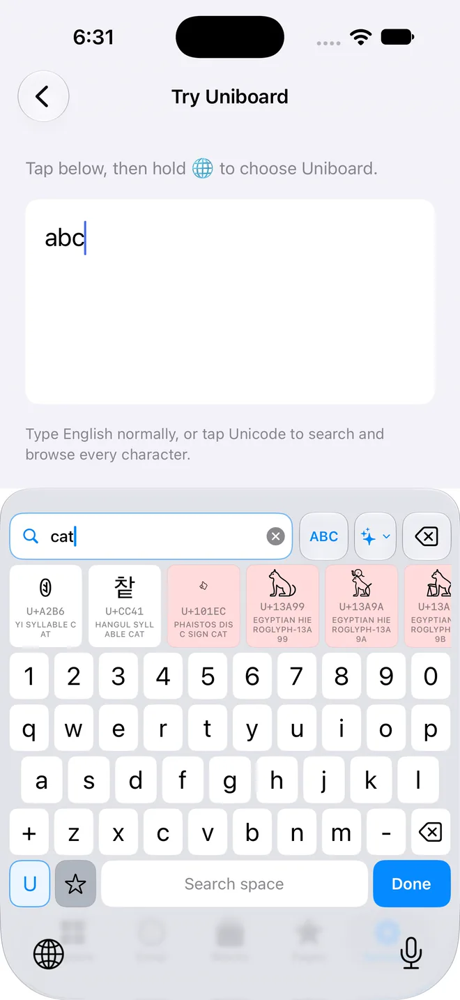
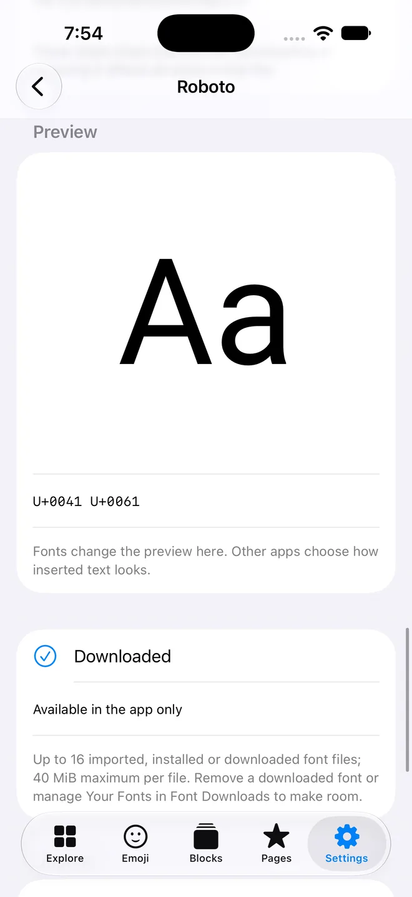
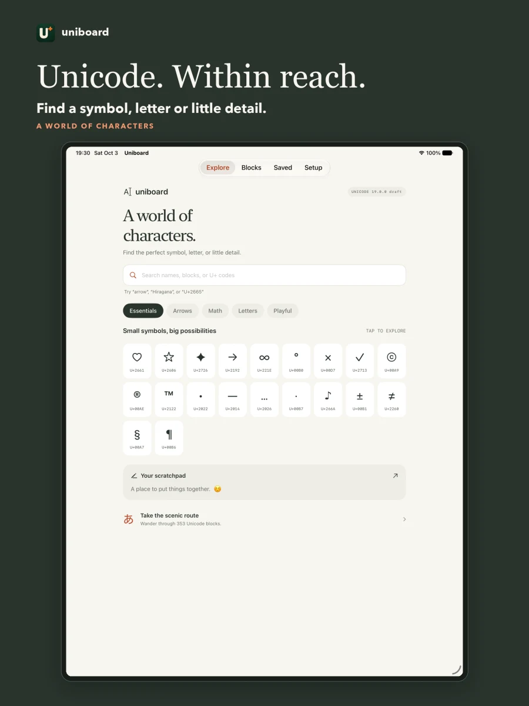

Type the real character.
Enable the Uniboard keyboard, search with its own keys, then tap a character or emoji to insert it at the cursor. Emoji retain their complete sequences. Your search stays inside the keyboard.
Unicode keyboard · iPhone & iPad
That arrow. The right mathematical symbol. A letter or emoji you can’t find on your keyboard. Search for it, understand it, and put it into your words.
Find it your way
Search Unicode names, descriptions, aliases and block names. Find complete emoji by name or group. Enter a code point when you know it. Browse when you don’t.
U+1F680🚀infinity∞arrows↗ ↔ ↘Enable the Uniboard keyboard, search with its own keys, then tap a character or emoji to insert it at the cursor. Emoji retain their complete sequences. Your search stays inside the keyboard.
Hold a key or pause a pointer over it for readable names, descriptions, Unicode age, block, category and encoding properties. Inspect an emoji’s sequence and component names. Inspection never inserts text.
Save characters and emoji, revisit recent entries and collect text in the app’s scratchpad. Explore all assigned characters newest first, or choose oldest first or code point order.
Coming in 1.5
Download Korean — Two-Set Hangul in the app and type on the standard two-set layout. Consonant and vowel keys build syllables as you go: ㅎㅏㄴㄱㅜㄱ becomes 한국. Backspace takes back one letter at a time. Shift adds the five double consonants and ㅒ ㅖ.
Languages now suggests downloads that match the languages on your device. Nothing downloads or switches on its own. Uniboard checks for storage before a download starts, tries again after a brief connection drop, and lets you remove a damaged download without losing My Words.

Also in 1.5: search every My Words dictionary at once, sort entries by reading or weight, and start a new word from a copy of another. Review every word in a file before you import it. Undo the last change to a keyboard row. Reset emoji size in one tap, or browse with fewer skin-tone variants. See what fills your 16 font slots. On iPhone in landscape, Mandarin and Japanese now leave room to see what you type.
New in 1.4
Type romaji and choose Japanese text: nihongo becomes 日本語. Type pinyin and choose Simplified Chinese text: nihao becomes 你好. Your typed spelling stays first in the candidate row, so you can keep exactly what you typed. My Words adds your own entries with exact output, including complete emoji sequences. Import and export them.
Language files download once in the app and are checked before use. Conversion happens on your device. Downloaded languages need Full Access so the keyboard can read the files the app shares. Direct Typing works without it.


Added in 1.3
Set up the keys you need. Check exactly what your text contains. Preview characters in the fonts you choose.
Edit letter, number and symbol keys, and arrange pages. Set automatic capitalization by sentence, word or letter, or turn it off. Search names, aliases, blocks or code points inside the keyboard. Hold a search key to type it.
Compare characters in the available fonts. Filter by family or style. Download Google Fonts on demand in the app. Font rules choose a font for a code point, range or Unicode block, with fallback. Fonts affect only Uniboard’s previews, not other apps.
Choose Inspect Text in the keyboard preview. Read code points, names, grapheme clusters, UTF-16 counts and normalization forms. Copy normalized text, or UTF-8 or UTF-16 hex. Inspection doesn’t change your text or access the whole document.
Copy Image turns the preview text into a picture. Choose its colors, including a transparent background, and a 1×, 2× or 3× scale. It pastes as a picture, not editable text.
Export your configuration as a TOML file, import one, or edit it in the app. Uniboard validates it before applying. Typing, search and inspection work without Full Access; copying to the clipboard from the keyboard needs it.
From search to the cursor
Unmodified app screens on iPhone and iPad. The keyboard keeps the query to itself and inserts only the entry you choose.



Small permissions. Big alphabet.
Search runs against a bundled database. Uniboard does not collect your searches or typing, does not need an account, and does not require keyboard Full Access for typing. No ads. No analytics SDK.
Characters you insert into another app are handled by that app. Uniboard keeps its own favorites, recent characters and emoji, and edition preferences locally on your device.
Read the privacy policyFor the curious, the precise, and the expressive
Write mathematical notation, find arrows and punctuation, inspect Latin or Greek letters, explore scripts, or check an exact code point while testing software. Browse full emoji sequences, including joined emoji, skin tones, flags and keycaps.
The latest Unicode release is the default. You can also choose either of the two previous releases or the development draft. Every edition works offline, and your choice applies to the app and the keyboard. Characters use official Unicode age for version order; emoji use their Emoji introduction version. Draft names and assignments can change.
A practical guide to Unicode searchA few useful answers
Open Settings → General → Keyboard → Keyboards → Add New Keyboard, then choose Uniboard. In a text field, hold the globe key and select Uniboard. You can leave Full Access off: typing, search and text inspection work without it. Copying to the clipboard from the keyboard needs Full Access. See the setup guide.
Yes. Try U+1F680, 0x1F680 or 1F680 for 🚀. Explicit decimal search uses decimal:128640. Use U+FACE for a hexadecimal code point containing only letters.
No font contains every character. Your device may show a missing-glyph box for a character even though its code point is valid. Recent characters and emoji may need newer fonts. Hold a key or keep a pointer over it to read the name, description and properties even when the glyph is missing. Uniboard copies or inserts the original scalar or complete emoji sequence. Downloaded fonts and font rules change only Uniboard’s previews; other apps choose their own fonts.
The Emojis tab searches and browses the official fully qualified emoji set. Tapping a keyboard entry inserts its entire sequence, including any joiners, variation selectors or modifiers. The latest Unicode release is the default; you can also choose either of the two previous releases or the development draft. Then choose newest, oldest or code point order. Emoji version order uses the emoji’s introduction, while character order uses Unicode age.
iOS uses its system keyboard in password and phone-number fields, and some apps disable third-party keyboards. In other supported fields, switch with the globe key. You can also copy characters from the containing app.
The app interface and Unicode character names are in English. The catalog contains characters from many writing systems; inserting those characters does not require an English document. You can also type Japanese with romaji and Mandarin Chinese with pinyin after an optional language download in the app.